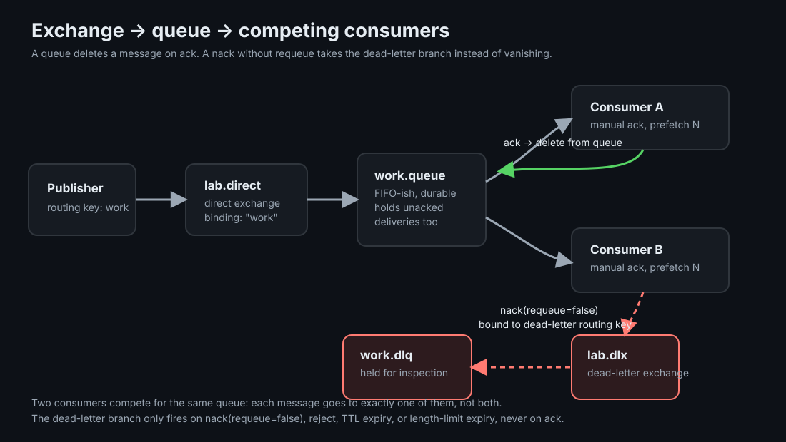
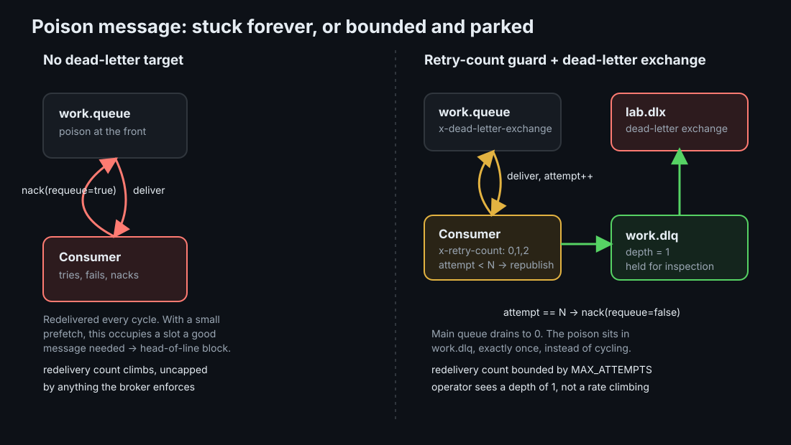

RabbitMQ: Acks, Dead-Letter Queues, and Redelivery
A broker-managed queue makes a different promise than a log: it deletes what it has successfully handed off. That single decision is why RabbitMQ needs acks, redelivery, prefetch, and dead-letter queues in a way a log-based broker does not.
TLDR
- RabbitMQ is a queue, not a log: a message is removed from the queue once it is acked. There is no offset to rewind and no replay of history; once it's gone, it's gone.
- Redelivery is the queue's retry mechanism: a
nackwith requeue puts the message back for another attempt, at-least-once, exactly like every other retry-based delivery contract. - A message that can never succeed needs somewhere to go: without a dead-letter exchange, a poison message redelivers forever and, bounded by prefetch, can starve the good work behind it.
- Prefetch is a blast-radius control that cuts both ways: it bounds how much unacked work one consumer can hold, but a small prefetch is exactly what turns one stuck message into a queue-wide stall.
Mental Model
The clearest way to place RabbitMQ is against Kafka, because they answer the same question, "how does a message get from a producer to a consumer reliably," with opposite retention policies. Kafka is a log: messages are appended, retained for a configured window, and consumers track their own position (an offset) into that log. Nothing is removed on read; a consumer can rewind, replay, or fall behind and catch up later, and ten different consumer groups can each read the same message at their own pace.
RabbitMQ is a queue: a message is handed to exactly one consumer (per queue, among however many are competing for it) and is deleted from the broker once that consumer acknowledges it. There is no offset, no replay, and no "read it again later." If a consumer nacks the message instead, or crashes before acking it, RabbitMQ's only options are to redeliver it, or, if it will never succeed, hand it somewhere else. That somewhere else is a dead-letter queue. A log doesn't need one, because a log never has to decide where an unprocessable message goes; it just sits at its offset forever, available to be skipped, replayed, or inspected. A queue has to decide, on every single nack, what happens next.
Ground-Up Explanation
Exchanges, bindings, and routing keys
A publisher never sends directly to a queue. It sends to an exchange with a routing key, and a binding between the exchange and a queue decides which messages land there. A direct exchange matches the routing key exactly; a topic exchange matches wildcard patterns against it; a fanout exchange ignores the routing key and copies the message to every bound queue; a headers exchange matches on message headers instead of the routing key. This indirection is what lets a single publish reach zero, one, or many queues without the publisher knowing which queues exist.
Queues and competing consumers
A queue is an ordered (with caveats, see below) buffer that one or more consumers pull from. When multiple consumers subscribe to the same queue, each message goes to exactly one of them, round-robin by default; this is the competing consumers pattern, and it is how RabbitMQ scales a single logical stream of work across many workers without any of them coordinating with each other.

Concept Deep Dive
ack, nack, reject, and requeue
A consumer that accepts manual acknowledgement (auto_ack=false) has three things it can do with a delivered message: ack it (done, delete it from the queue), nack or reject it with requeue=true (broker makes it available for redelivery, to this consumer or another one competing for the queue), or nack/reject it with requeue=false (drop it, or, if the queue is configured with a dead-letter target, route it there instead). This is the entire vocabulary redelivery is built from; everything else, retry counting, poison handling, backoff, is application logic layered on top of these three outcomes.
Prefetch (QoS) and head-of-line blocking
basic.qos(prefetch_count=N) caps how many unacked messages the broker will hand a consumer at once. A low prefetch limits how much work one crashed or stuck consumer can be holding onto, which is the point: without it, a fast-producing publisher can hand a slow consumer thousands of unacked messages, all of which get redelivered to someone else the moment that consumer dies. But the same bound has a cost. If one of those in-flight messages can never be acked, a low prefetch means that message occupies a disproportionate share, sometimes all, of the consumer's delivery slots, and nothing behind it in the queue gets delivered until it is resolved. This is head-of-line blocking: a queueing-theory term for exactly this shape of problem, one stuck item blocking everything queued behind it, that shows up anywhere work is dispatched from a bounded window rather than dispatched freely.
Dead-letter exchanges, TTL, and poison messages
A dead-letter exchange is a queue argument (x-dead-letter-exchange, optionally x-dead-letter-routing-key) that tells RabbitMQ where to route a message that is rejected without requeue, or that expires via a per-message or per-queue TTL, or that is dropped because the queue hit a max-length limit. Point it at another exchange bound to a dead-letter queue, and instead of vanishing, the message is preserved somewhere an operator or a replay job can find it. A poison message is one a consumer can never successfully process, a malformed payload, a business rule the consumer has no way to satisfy, a bug the consumer will hit on every retry. Without a dead-letter target, the only options for a poison message are "redeliver it forever" or "drop it silently"; neither is acceptable, which is why the dead-letter exchange exists specifically for this case.
RabbitMQ does not give a message a running redelivery count the way a database row might carry a version number; the redelivered flag is boolean, not a counter, until a message has actually been dead-lettered at least once, at which point an x-death header array starts recording cycles. To cap retries before the first dead-letter, an application-level counter is the standard approach: a custom header the consumer increments and forwards on each retry, most commonly by republishing to the tail of the queue and acking the original rather than relying on native requeue. That last detail matters: native nack(requeue=true) tends to make the message available again near the front of the queue, which is exactly what causes head-of-line blocking; republishing to the tail is a deliberate choice to trade that away.

Ordering guarantees, and how requeue breaks them
A RabbitMQ queue with a single consumer and no requeues delivers in the order messages were published: first in, first out. Two things break that promise in practice. First, competing consumers: with more than one consumer on a queue, per-consumer ordering still holds, but the interleaving across consumers is not globally ordered, the same limitation Kafka solves by pinning ordering to a partition (one consumer per partition per group) rather than promising it across the whole topic. Second, and specific to queues rather than logs, requeue: a message that gets nacked and put back is, by definition, delivered again later than its original position, out of the order it was produced in. A message can be redelivered dozens of times while messages produced well after it complete first. This is not a bug, it is the direct consequence of "retry" meaning "try again later" in a system with no offset to rewind to; a log-based broker does not have this failure mode because replaying a message from an offset never removes or reorders anything else in the log.
Quorum queues versus classic queues
Classic queues are the original non-replicated queue type. Classic mirroring was deprecated and removed in RabbitMQ 4.x, so data-safety-sensitive queues should use quorum queues or streams instead. Quorum queues use Raft replication, support broker-side poison-message handling, and expose a delivery-count header that classic queues do not. That can replace an application retry counter for quorum queues. The trade-off is the usual one for consensus-backed replication: more nodes involved per write, more network round trips, and different throughput limits than a non-replicated classic queue.
RabbitMQ, Kafka, and SQS compared
| RabbitMQ | Kafka | Amazon SQS | |
|---|---|---|---|
| Delivery model | Broker pushes to a consumer; message deleted on ack | Consumer pulls by offset; message retained regardless of consumption | Consumer polls and receives a receipt handle; message hidden, not deleted, until deleted explicitly |
| Ordering | FIFO per queue with a single consumer; broken by requeue or multiple competing consumers | Strict per-partition order; no ordering across partitions | Best-effort on standard queues; strict per-message-group on FIFO queues |
| Retention | Until consumed (acked); not designed for replay | Time- or size-based retention independent of consumption; built for replay | Configurable retention (up to 14 days); a consumed-and-deleted message is gone |
| Redelivery / visibility | Redelivered immediately on nack/requeue or consumer disconnect | Consumer re-reads from its last committed offset; broker has no per-message redelivery concept | Message hidden for a visibility timeout after receipt; reappears automatically if not deleted in time |
| DLQ mechanism | Explicit dead-letter exchange bound to a queue; triggered by nack(requeue=false), TTL, or length limit | No native DLQ; conventionally a separate topic an application routes to itself | A redrive policy names a target DLQ and a maxReceiveCount; SQS moves the message automatically once that receive count is exceeded |
| Scaling unit | Competing consumers on a queue; more consumers, more parallelism, no ordering unit | Partitions; one consumer per partition per group is the parallelism ceiling | Nearly unlimited consumer count on standard queues; FIFO queues cap throughput per message group |
SQS's visibility timeout is worth naming explicitly because it solves a similar failure shape with a different mechanism: a message becomes invisible to other consumers the moment it is received, and reappears automatically if the receiving consumer never confirms it by deleting it in time. RabbitMQ has no per-message visibility timeout for normal acknowledgements; an unacked message is redelivered when the consumer or channel goes away, or when the consumer explicitly rejects or nacks it with requeue. SQS's maxReceiveCount redrive policy does natively what this topic builds by hand for classic queues with a custom header: cap the number of redeliveries before the message is moved somewhere else.
Idempotency still applies
Redelivery, whatever the broker, is an at-least-once contract: the same message can be delivered and processed more than once, whether that's a RabbitMQ redelivery after a crash before ack, a Kafka consumer replaying from its last committed offset, or an SQS message reappearing after its visibility timeout expires with no delete. None of these mechanisms make a consumer's side effects idempotent on their own; that is still the consumer's job. See Delivery Semantics for the idempotent-consumer patterns that apply here exactly as they do to a log-based consumer.
Implementation Details
- Declare dead-letter exchange and queue before the main queue that references them, and treat topology declaration as idempotent: same names, same arguments, every time, so a rerun never hits a 406 for redeclaring a queue with different arguments.
- Choose prefetch deliberately, not by default. Prefetch 1 gives maximum fairness and minimum blast radius per consumer but the sharpest head-of-line blocking; a higher prefetch trades some of that blocking away for more in-flight risk per consumer.
- Pick a retry-counting strategy before you need it. A custom header with a republish-to-tail pattern works on classic queues; quorum queues expose a delivery-count header and broker-side poison-message handling.
- Size the dead-letter queue's retention and alerting like any other operational queue. A DLQ with no consumer and no alert on nonzero depth is just a slower way to lose messages.
- Prefer quorum queues or streams for replicated durable queues. Classic queues remain useful for some workloads, but classic mirroring is gone in RabbitMQ 4.x.
Production examples
RabbitMQ fits work that should be claimed by one worker: sending emails, resizing images, generating reports, dispatching webhooks, or running fraud-review jobs. A successful worker acks the message. A worker that cannot process the message decides whether to retry, requeue, or dead-letter it.
Dead-letter queues matter most when one malformed or impossible message can block useful work behind it. Examples: an email job with an invalid template id, an image job for a corrupt file, a webhook delivery with an unsupported destination, or a report job whose input references deleted data. Retrying forever hides the problem and wastes worker capacity; dead-lettering parks the failed message where an operator or replay tool can inspect it.
Prefetch is the production tuning knob. A low prefetch limits how much work a crashed worker can hold, but it makes head-of-line blocking sharper. A higher prefetch improves throughput for fast homogeneous jobs, but increases the amount of in-flight work that must be redelivered after a worker dies.
Lab Evidence
The runnable lab is labs/messaging/rabbitmq: one topology, lab.direct exchange bound to work.queue, lab.dlx bound to work.dlq, and a producer/consumer pair that switches between "no dead-letter target" and "dead-letter target + retry-count guard" purely through queue arguments set at declare time.
make break
No dead-letter target, prefetch=1. The poison message is nacked with requeue every time, capped at 20 redeliveries so the demo terminates. With only one unacked slot, nothing produced after the poison is ever delivered.
make test
Dead-letter target + a 3-attempt retry-count guard, prefetch=5. The poison is dead-lettered on the third attempt; the main queue drains to 0, the DLQ holds exactly 1 message, and all good messages complete.
reported metrics
Good messages processed, poison redelivery/attempt count, produced order vs completed order, good-message throughput, and queue depths pulled from the management API.
Measured: the same poison message, two outcomes
Real run on 2026-07-08, 30 messages, poison at position 5:
break (no DLQ, prefetch=1):
good_processed=4/29 poison_attempts=20 (capped) poison_resolved=false
good_throughput=169.1 msg/s
produced_order: [1 2 3 4 5 6 7 ... 30]
completed_order: [1 2 3 4] (nothing after the poison is ever delivered)
work.queue messages=26 work.dlq messages=0
test (DLQ + retry-count guard, MAX_ATTEMPTS=3, prefetch=5):
good_processed=29/29 poison_attempts=3 poison_resolved=true
good_throughput=168.9 msg/s
produced_order: [1 2 3 4 5 6 7 ... 30]
completed_order: [1 2 3 4 6 7 8 ... 30 5] (5 completes dead last)
ordering: poison produced at position 5, completed at position 30 (delta=25)
work.queue messages=0 work.dlq messages=1The prefetch difference is the point, not a side detail. At prefetch=1 in break, the broker has exactly one unacked slot and keeps refilling it with the just-requeued poison instead of the 25 good messages queued behind it; only the 4 messages produced before the poison (seq 1-4) are ever delivered, and work.queue ends the run holding 26 messages, the poison plus everything stuck behind it. That is head-of-line blocking measured, not described. At prefetch=5 in test, there is room for other messages to flow around the poison while it retries: all 29 good messages complete in strict produced order, and the poison itself resolves on schedule, three attempts, then dead-lettered, completing dead last (position 30 of 30) instead of never completing at all. The operational signal changes from "a redelivery counter climbing somewhere, unbounded" to "the DLQ depth is 1," a queue depth alert instead of a rate an operator has to notice.
Production Notes
- A dead-letter queue is not optional risk mitigation once a queue has more than one kind of message flowing through it; it is the difference between a poison message being a contained, visible incident and an invisible, unbounded one.
- Alert on dead-letter queue depth, not just its existence. A DLQ that has been silently accumulating for weeks is a worse failure mode than no DLQ at all, because it looks like the problem was handled.
- Prefetch tuning is a live trade-off, not a constant: raise it for throughput once head-of-line blocking risk is understood and accepted; lower it when a single stuck consumer's blast radius needs to be minimized.
- Use quorum queues or streams when replication and data safety matter. Migrating an existing classic queue is an operational project, not a config flip, and should be planned as one.
Code Pointers
| Code | Why it matters |
|---|---|
src/main.go | Idempotent topology declaration, the manual ack/nack branches for break vs test mode, and the produced-vs-completed order tracking. |
Makefile | The break/test scenario env overrides and the management-API queue-depth checks. |
compose.yaml | Pinned rabbitmq:3.13-management, the healthcheck/--wait lifecycle, and the non-guest user needed for cross-container AMQP logins. |
Further Reading & Watching
- Consumer Acknowledgements & Publisher Confirms, RabbitMQ docs. The full ack/nack/reject vocabulary this page builds on.
- Dead Letter Exchanges, RabbitMQ docs. The authoritative reference for dead-letter routing, including TTL and length-limit triggers this page only summarizes.
- Quorum Queues, RabbitMQ docs. Raft-backed queues, delivery limits, and broker-side poison-message handling.
- Consumer Prefetch, RabbitMQ docs. The QoS mechanism behind this page's head-of-line blocking discussion.
- 13 Common RabbitMQ Mistakes, CloudAMQP. A practitioner list that includes several prefetch and DLQ misconfigurations covered here.
- When and How to Use the RabbitMQ Dead Letter Exchange, CloudAMQP.
- Amazon SQS dead-letter queues, AWS docs. The visibility-timeout and
maxReceiveCountmodel this page contrasts RabbitMQ against. - Hohpe & Woolf, Enterprise Integration Patterns. Dead Letter Channel, Guaranteed Delivery, and Competing Consumers as named, broker-agnostic patterns.
- Book: Martin Kleppmann, Designing Data-Intensive Applications, ch. 11, on message brokers versus logs as two answers to the same delivery problem.
- Kafka Internals, the companion topic on this site. The log-based counterpart to everything on this page.
- Delivery Semantics, the companion topic on this site. At-least-once and the idempotent-consumer pattern this page's redelivery contract requires downstream of it.